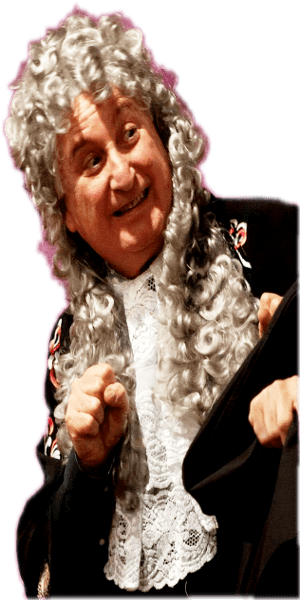

- Curriculum Formativo
- Nato a Catanzaro nel 1945.
- Laureato in Economia e Commercio, docente di Matematica dal 1969 al 2010.
- Allievo del “Teatro Scuola” di Catanzaro dal 1975 al 1981 diretto dal maestro Gianni Diotaiuti (ex direttore della scuola "Fersen" di Roma).
- Ha frequentato corsi di dizione, impostazione della voce, recitazione, improvvisazione ed in particolare corsi di mimica e commedia dell’arte.
- Ha studiato musica e pianoforte.
- Ha praticato da giovane ginnastica artistica, affinando i movimenti del corpo.
- Ha frequentato corsi di aggiornamento per insegnanti autorizzati dal "Ministero della Pubblica Istruzione".
- Ha frequentato nel 1996 l’"Università del Teatro Eurasiano" diretto da Eugenio Barba, con laboratorio di tecnica teatrale, movimento del corpo e danza.
- Ha frequentato seminari indetti dall’IRRSAE su "Educare al teatro, educarsi al teatro".
- Ha frequentato un corso di danza e movimento del corpo presso l’accademia di Palmi (Reggio Calabria) diretto dal mimo internazionale "Le Breton".
- Attività d'insegnante in scuole d'arte drammatica
- Ha insegnato presso l’associazione Agape "Teatro tempo libero" di Catanzaro : dizione, recitazione e interpretazione per la durata di 5 anni facendo la regia di numerosi saggi di fine corso.
- Ha insegnato presso l’Accademia "Tersicore" di Catanzaro: dizione, impostazione della voce e recitazione per 3 anni con saggi pubblici finali.
- Ha tenuto corsi di aggiornamento, come docente esperto per due anni, autorizzati dal "Ministero della Pubblica Istruzione" a docenti di scuola media superiore ed in particolare il corso "Leggere ed interpretare" presso l’Istituto Maresca di Catanzaro.
- Ha insegnato presso il centro anziani di Catanzaro recitazione.
- Ha insegnato nell’anno 2004 dizione, recitazione , strumento musicale , fabbricazione di maschere in carta pesta e messa in scena di un lavoro teatrale, presso l’Istituto di Pena Minorile di Catanzaro.
- Ha tenuto per sei anni corsi di dizione e lettura presso il Liceo Classico di Catanzaro.
- Ha insegnato per dieci anni presso l’Istituto Tecnico Commerciale "B. Grimaldi" di Catanzaro :
dizione ,recitazione ed interpretazione nel laboratorio teatrale della scuola. - Direttore per tre anni del Laboratorio Teatrale "Uno Spazio da Vivere" dove ha insegnato dizione, recitazione e interpretazione.
- Attualmente direttore del "Teatro di Calabria Aroldo Tieri" dove insegna dizione, recitazione e interpretazione.
- Attività di attore
- Protagonista nello spettacolo prodotto dalla coop. teatrale S.A.C. "Alle cinque della sera".
- Protagonista nello spettacolo prodotto dalla coop. S.A.C. "L’Ippocampo" con regia di Mario Foglietti.
- Protagonista nello spettacolo prodotto dalla coop. S.A.C. "Courteline".
- Protagonista nello spettacolo "Il borghese gentiluomo" di Molière prodotto dalla Associazione Culturale "Alcmena".
- Protagonista nella "Mandragola" di Machiavelli prodotto dalla Associazione Culturale Alcmena.
- Protagonista nel musical "Aggiungi un posto a tavola" di Garinei e Giovannini prodotto dalla associazione culturale "Tam Tam".
- Protagonista negli "Uccelli" di Aristofane prodotto dall’Istituto Tecnico Commerciale di Catanzaro.
- Protagonista nella commedia "La zia di Carlo" di Thomas Brandon prodotto dalla Associazione Culturale Alcmena.
- Doppiatore di alcuni personaggi di corto metraggio con la regia di Mario Foglietti.
- Moltissimi concerti di musica e poesia prodotti dalla Associazione Culturale Alcmena.
- Protagonista in "Assassinio nella cattedrale" di Thomas S.Eliot.
- Protagonista nel monologo "Il tango dell'emigrante" di Giulio LaRosa, selezionato al concorso nazionale "Premio Nino de Reliquis" nel Novembre 2009, replicato presso il museo "San Giovanni" di Catanzaro.
- Protagonista nella "Figlia di Iorio" prodotto dal laboratorio teatrale "Uno spazio da vivere".
- Attore protagonista in "La rivolta di Casignana" andato in scena il 30 Maggio 2010.
- Protagonista nei "Malavoglia", andato in scena il 28 Giugno 2010.
- Co-protagonista nelle commedie di Anton Cechov: "L'orso" e "Domanda di Matrimonio"
- Protagonista nell'"Adelchi" di A. Manzoni nella parte del re Desiderio.
- Il Marchese di Forlinpopoli nella "Locandiera" di Goldoni.
- Attività di regia
- "Aulularia" di Plauto.
- Commedia musicale "Peo e Pao pagliacci da circo" di cui ha curato anche i costumi.
- "La Lisistrata" di Aristofane, ottenendo il premio speciale come migliore regia al festival del "Teatro nella scuola" di Crotone.
- "Il borghese gentiluomo" di Molière replicato più volte a Catanzaro per volontà del comune.
- "La Mandragola" di N. Machiavelli, ottenendo il premio speciale per la regia, la scenografia e i costumi al festival internazionale di Locri.
- “La zia di Carlo” di Thomas Brandon replicata più volte a Catanzaro con il patrocinio del comune.
- "Gli uccelli" di Aristofane ottenendo il premio per la regia, i costumi, le musiche e la scenografia al festival internazionale "I Fliaci" di Bari nonché il secondo posto assoluto su 543 partecipanti.
- "Assassinio nella cattedrale" di T.Eliot.
- 2004 - "E se avesse ragione il signor Lawrence" commedia inedita rappresentata presso l’auditorium A.Casalinuovo di Catanzaro ed il teatro "Il Grillo" di Soverato (CZ), riscuotendo ottime critiche sia per la impostazione degli attori (tutti propri allievi) che per la messa in scena.
- 2004 - "Doctor Faustus" di Christopher Marlowe, tragedia integrale per un progetto teatro del dipartimento di Lingua Inglese del Liceo Scientifico "L. Siciliani" di Catanzaro andato in scena il 7/12/2004.
- 2006 - "Gli Uccelli" di Aristofane : nuovo allestimento, ottenendo il primo premio assoluto di categoria al concorso nazionale "Grifo D''oro" di Partanna (PA) ed il premio per il migliore attore protagonista nell''anno 2006. Lo spettacolo ha partecipato alla rassegna teatrale delle scuole superiori della città tenutasi presso il Teatro Politeama di Catanzaro il 5 Giugno 2006.
- 2007 - "Il Malato Immaginario" di Molière nel 2007 ottenendo il "Grifo d''Oro" di Partanna (PA) per la migliore scenografia, i migliori costumi e per la migliore attrice protagonista; ha partecipato alla rassegna tetrale delle scuole superiori della città di Catanzaro presso il teatro Politeama.
- 2007 - "T'aiu 'e Maritara" anno 2007 di Niccolò Bagicalupo , traduzione in dialetto catanzarese di Sivestro Bressi della Compagnia Teatrale "A Trambia" di Catanzaro ; la rappresentazione è stata replicata per 20 volte nelle varie piazze della provincia di Catanzaro.
- 2008 - "La Figlia di Iorio" di G. D''Annunzio anno 2008 , del Laboratorio Teatrale "Uno Spazio da Vivere", riduzione di Luigi La Rosa rappresentata presso l'Auditorium "Casalinuovo" di Catanzaro il 15 Giugno e replicata nel Dicembre 2009.
- 2008 - "'U Cortila d'a Pacia" anno 2008 adattamento in dialetto catanzarese di Silvestro Bressi della Compagnia Teatrale "A Trambia" di Catanzaro; ha debuttato il 2 Luglio 2008 presso l'Auditorium "Casalinuovo" ed è andato in replica nelle varie piazze della provincia di Catanzaro sia nella stagione 2008 che 2009.
- 2010 - "L'eredìtà dello zio Bonanima" anno 2010, adattamento in dialetto catanzarese di Silvestro Bressi della Compagnia Teatrale "A Trambia" di Catanzaro; ha debuttato presso il Teatro "Masciari" di Catanzaro ed è attualmente in replica nella varie piazze della provincia di Catanzaro.
- 2010 - "I Malavoglia" romanzo di Giovanni Verga, scritto da Luigi LaRosa, ha debuttato il 28 Giugno 2010 presso l'Auditorium "Casalinuovo" di Catanzaro.
- 2011 - "Adelchi" di A. Manzoni, anno 2011. Ha debuttato il 27 Novembre 2011 presso l'Auditorium "Casalinuovo" di Catanzaro.
- 2012 - "La Locandiera" di Goldoni, anno 2012. Ha debuttato il 20 Aprile 2012 presso l'Auditorium "Casalinuovo" di Catanzaro.
- 2013 - "La Medea" di Euripide, anno 2013. Ha debuttato il 14 Luglio 2013 presso l'Auditorium "Casalinuovo" di Catanzaro.
- 2014 - "Antigone" di Sofocle, anno 2014. Ha debuttato nel Complesso Monumentale del San Giovanni (Catanzaro) - Compagnia Teatrale "Teatro di Calabria A. Tieri".
- 2014 - "Titan - I Fuochi di Prometeo", anno 2014. Ha debuttato nel Complesso Monumentale del San Giovanni (Catanzaro) - Compagnia Teatrale "Teatro di Calabria A. Tieri".
- 2015 - "Miles Gloriosus" di Plauto, traduzione di Pier Paolo Pasolini, anno 2015. Ha debuttato nel Complesso Monumentale del San Giovanni (Catanzaro) - Compagnia Teatrale "Teatro di Calabria A. Tieri".
- 2015 - "Elettra" di Sofocle, anno 2015. Ha debuttato nel Complesso Monumentale del San Giovanni (Catanzaro) - Compagnia Teatrale "Teatro di Calabria A. Tieri".
- 2016 - "Edipo Re" di Sofocle, anno 2016. Ha debuttato nel Complesso Monumentale del San Giovanni (Catanzaro) - Compagnia Teatrale "Teatro di Calabria A. Tieri".
- 2017
- "Titan - I Fuochi di Prometeo", anno 2017 (riallestimento completo della prima edizione che ha debuttato nel 2013) tratta dal Prometeo e scritto dal prof. Luigi LaRosa. Ha debuttato nel Complesso Monumentale del San Giovanni (Catanzaro) - Compagnia Teatrale "Teatro di Calabria A. Tieri".
- "La Medea" di Euripide, anno 2017. Riallestimento completo dellla tragedia di Euripide (prima edizione ha debuttato del 2013). Ha debuttato nel Complesso Monumentale del San Giovanni (Catanzaro) - Compagnia Teatrale "Teatro di Calabria A. Tieri".
- "Il Verso è Tutto" di Gabriele D'Annunzio, anno 2017. Ha debuttato nel Complesso Monumentale del San Giovanni (Catanzaro) - Compagnia Teatrale "Teatro di Calabria A. Tieri".
- 2018
- "Le Eumenidi" di Eschilo, anno 2018. Ha debuttato nel Complesso Monumentale del San Giovanni (Catanzaro) - Compagnia Teatrale "Teatro di Calabria A. Tieri".
- "ORESTEA" di Eschilo e le tre opere che compongono la trilogia AGAMENNONE - COEFORE - EUMENIDI. Ha debuttato nel Complesso Monumentale del San Giovanni (Catanzaro) - Compagnia Teatrale "Teatro di Calabria A. Tieri".